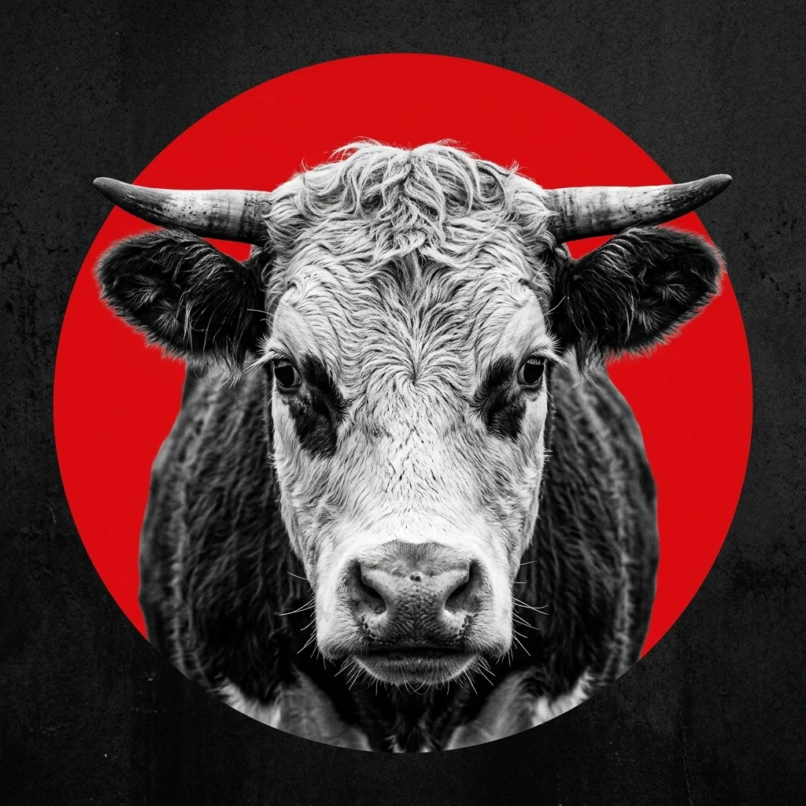
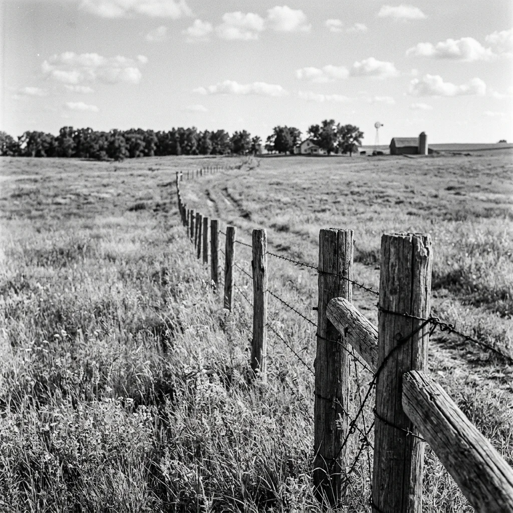
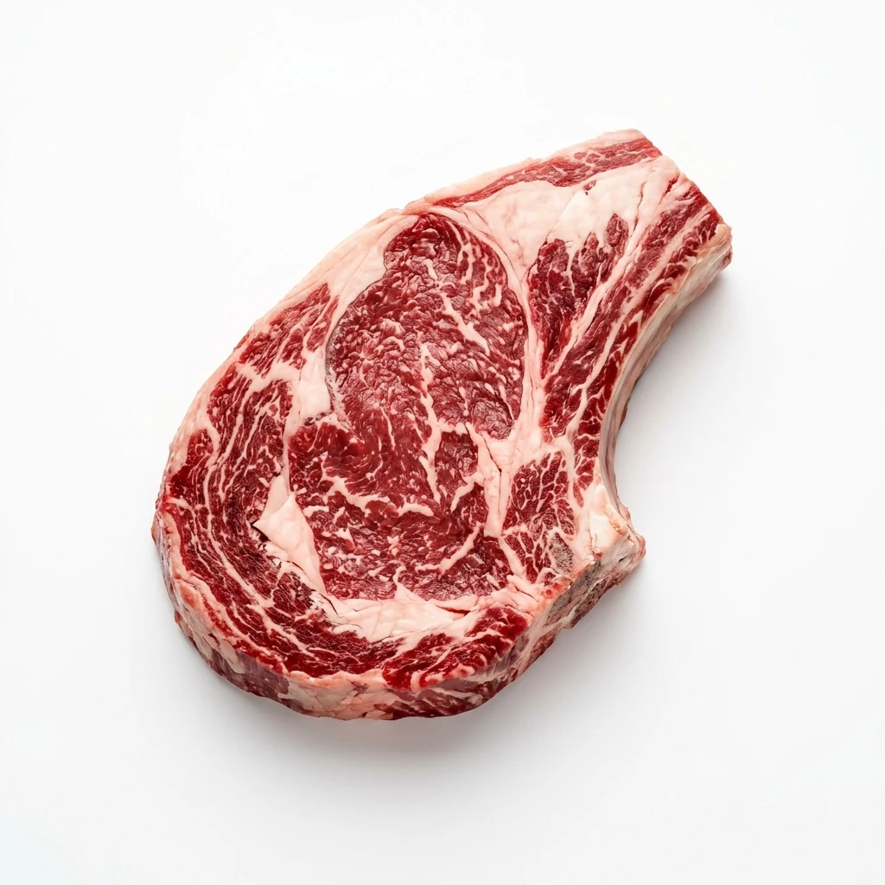
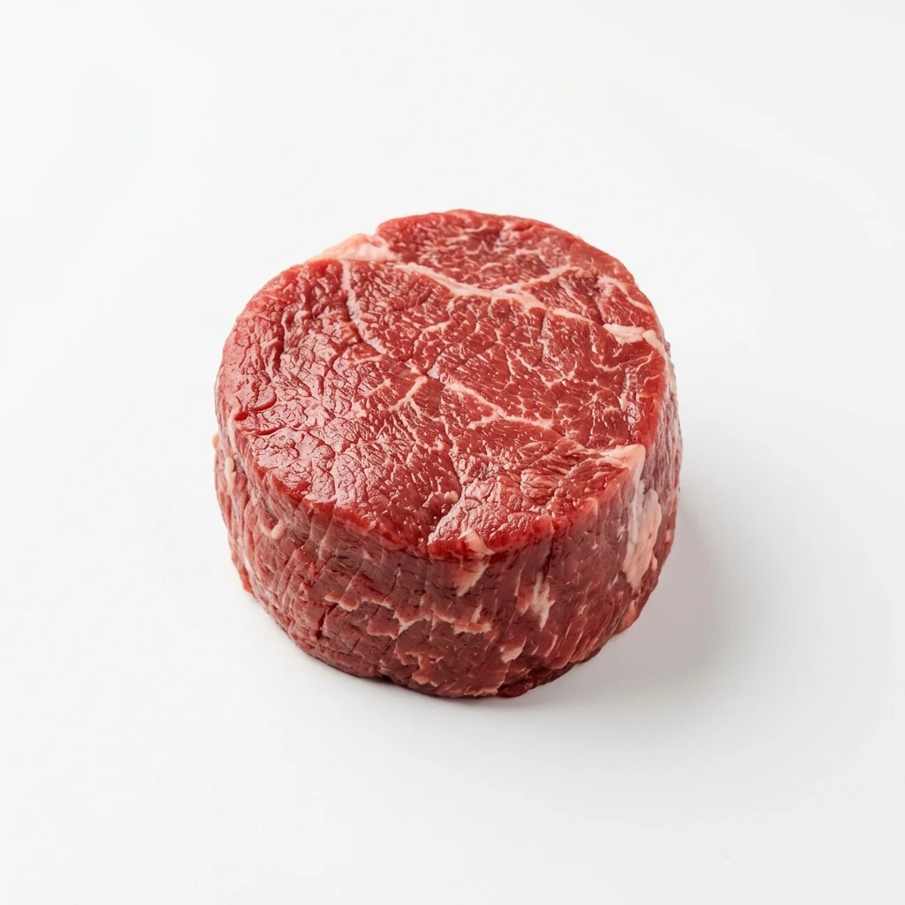
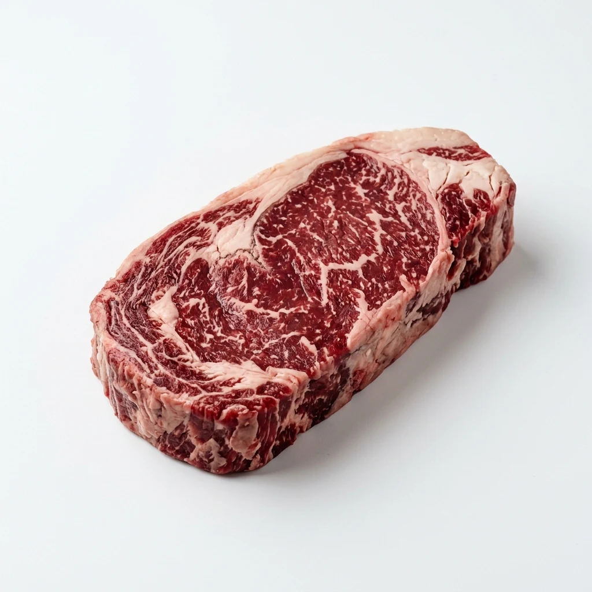
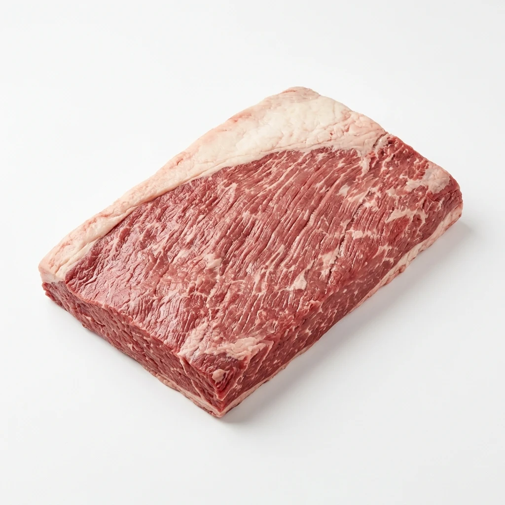
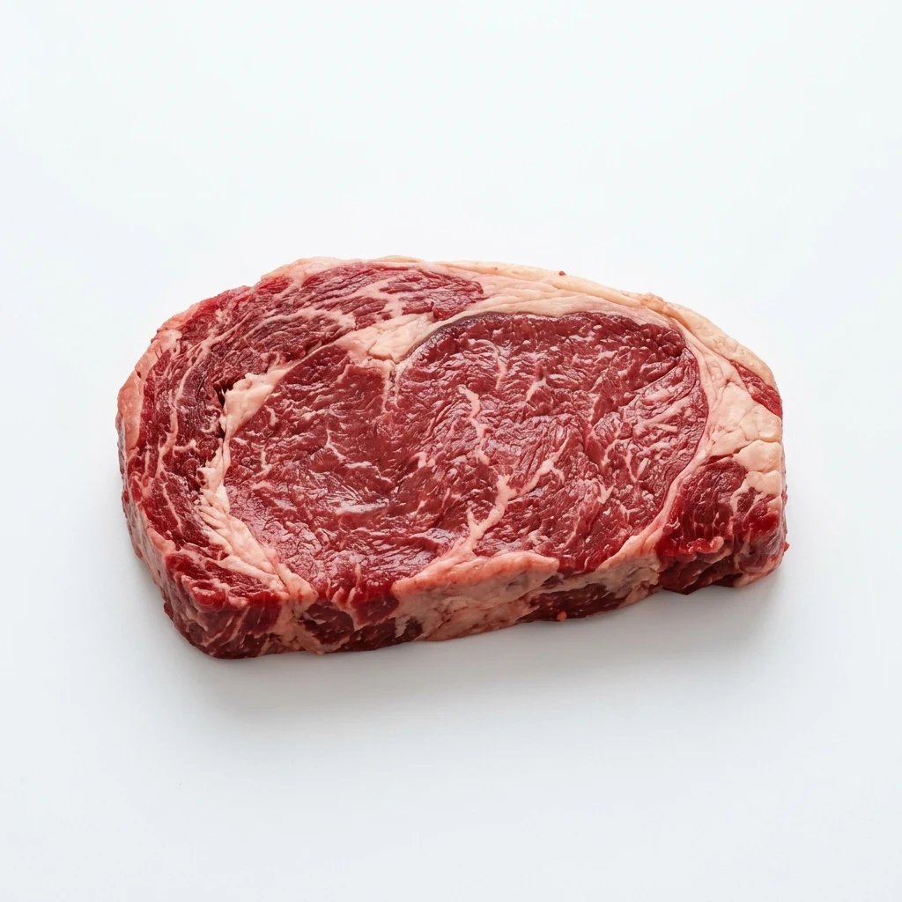

One animal. A world of difference.
The cow.
Two ways.
Every cut tells a story.
Explore the anatomy, follow the value, and see beef from a different perspective.

The whole picture
Start with the animal.
Two ways to divide it.
A better way to understand it.
One cow. Two maps.
Select a cut to explore its character
Explore A Cut
Beyond the butcher’s counter
Follow the bigger story.
Where it comes from.
What it becomes. What it’s worth.
“
Same cow.
Different stories.
More understanding.

Popular Cuts
Featured cuts · retail price per lb

Ribeye

Tenderloin

New York Strip
Chuck Roast

Brisket

Sirloin
Better data.
A richer story.
Back to the explorer ↗
Beyond the usual cuts
Bone-in steak, sweetbreads, kidney, and tongue. Argentine retail listings; US prices are not yet connected.
Prices shown in USD/lb. Open an entry for the source date. Missing prices mean no verified listing was collected; they are never borrowed from another cut.